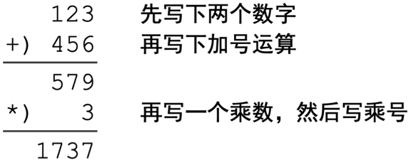
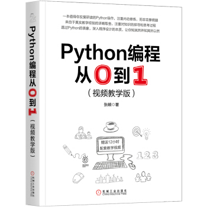

运算符和运算数组成表达式。运算符和运算数的出现次序会影响表达式乃至程序设计语言的风格。
1．前缀表达式
前缀，是指运算符的位置在前。前缀风格的一个例子是函数调用，如求最大值函数：max(3, 2, 5)。函数max接收若干个运算数，计算其中最大者作为表达式的值。这种前缀函数调用形式称为面向过程的函数调用风格。
1+2也可以写为前缀形式(+ 1 2)。Python不使用这种形式，但著名的程序设计语言Lisp就使用这种风格。[1]
2．中缀表达式
中缀，顾名思义是指运算符的位置在中间。1+2毫无疑问属于中缀表达式，但更值得注意的是面相对象风格的函数调用，如："helloPythonworld".split(" ")。这个表达式里的运算是split函数，这个函数接受两个参数：第一个是字符串"helloPythonworld"，第二个是空格字符串" "。计算的过程则是以空格为分隔符切割字符串，得到一个包含切割结果的列表["hello", "Python", "world"]。
面向过程和面向对象风格的函数调用在Python中都有广泛应用。本书从开始就普遍使用这两类风格的函数调用。本书将在第2章详细讨论函数，在第四章详细讨论面向对象设计。
3．后缀表达式
(1 2 +)是后缀表达式。后缀表达式和人们在进行竖式演算的书写次序一致（先写下数字，再写运算符，再计算结果），如图 1.1 所示。

图 1.1 竖式运算
某些高级计算器支持以后缀次序输入算式，如HP48G。在程序设计语言的语法规则中，后缀序比较少见。本书在1.8.5 节的示例中使用了后缀表达式。
[1] 有兴趣的读者可以参阅《程序设计语言的构造和解释》 [39]，该书通篇用一种LISP语言的方言Scheme写就，是计算机科学领域的经典书籍。
这是一本很有趣很有趣的Python入门书，墙裂推荐。
